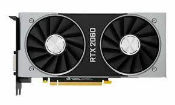

|  | A graphics card (also called a video card, display card, graphics adapter, GPU, VGA card/VGA, video adapter, or display adapter) is an expansion card which generates a feed of output images to a display device (such as a computer monitor). Frequently, these are advertised as discrete or dedicated graphics cards, emphasizing the distinction between these and integrated graphics. At the core of both is the graphics processing unit (GPU), which is the main component that performs computations, but should not be confused with the graphics card as a whole, although "GPU" is often used as a metonymic shorthand to refer to graphics cards. |
Most graphics cards are not limited to simple display output. Their integrated graphics processor can perform additional processing, removing this task from the central processor of the computer. For example, Nvidia and AMD (previously ATI) produced cards that render the graphics pipelines OpenGL and DirectX on the hardware level. In the later 2010s, there has also been a tendency to use the computing capabilities of the graphics processor to solve non-graphic tasks, which can be done through the use of OpenCL and CUDA. Graphics cards are used extensively for AI training, cryptocurrency mining and molecular simulation. |
|